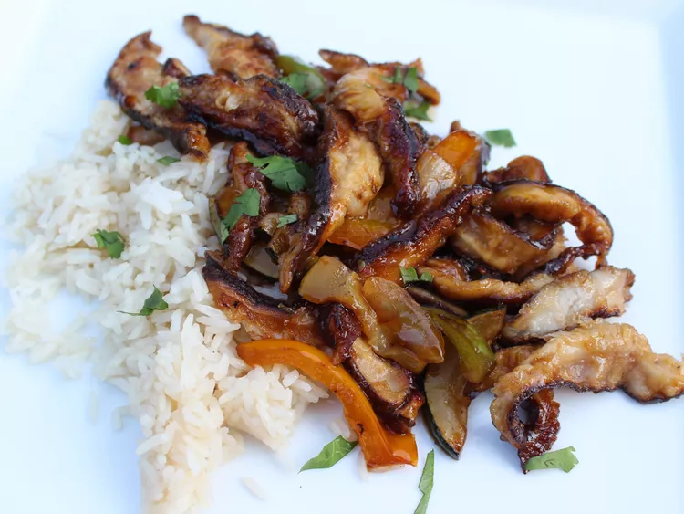

Shiitake Mushroom Stir Fry

Shiitake Mushroom Stir Fry
In this shiitake mushroom stir fry, mushrooms, bell peppers, onion, and zucchini are glazed with a delicious sweet-salty soy-chili sauce.
Add a protein if you like, and serve over rice.
Ingredients
Sauce
- 2 tablespoons low-sodium soy sauce
- 1 1/2 teaspoons oyster sauce
- 1 tablespoon rice vinegar
- 1 tablespoon sweet Thai chili sauce
- 1 tablespoon maple syrup
- 1/8 teaspoon red chili pepper flakes
Sitr Fry
- 6 ounces shiitake mushrooms, thinly sliced
- 1 tablespoon low-sodium soy sauce
- 2 tablespoons cornstarch
- 2 tablespoons sesame oil, divided
- 2 cloves garlic, minced
- 1/2 cup chopped onion
- 1 orange bell pepper, chopped
- 1/2 cup chopped zucchini
Steps
- Combine soy sauce, oyster sauce, rice vinegar, sweet Thai chili sauce, maple syrup, and red pepper chili flakes in a small bowl. Stir until smooth and set aside.
- Add mushrooms to a bowl, drizzle with 1 tablespoon soy sauce, and toss until coated. Sprinkle cornstarch over mushrooms and toss until completely coated.
- Heat 1 tablespoon sesame oil in a wok or large skillet over medium-high heat. Add mushrooms; cook until golden brown, about 5 minutes per side. Transfer mushrooms into a dish; set aside.
- Heat remaining 1 tablespoon sesame oil in the same wok or skillet over medium-high heat. Add onions, orange peppers, and zucchini, and cook until softened, about 5 minutes. Stir sauce into pan and cook until thickened, about 3 minutes. Add mushrooms back into stir fry; toss to coat.
Back to home page